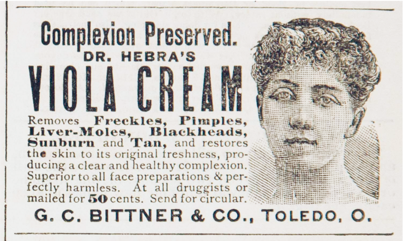
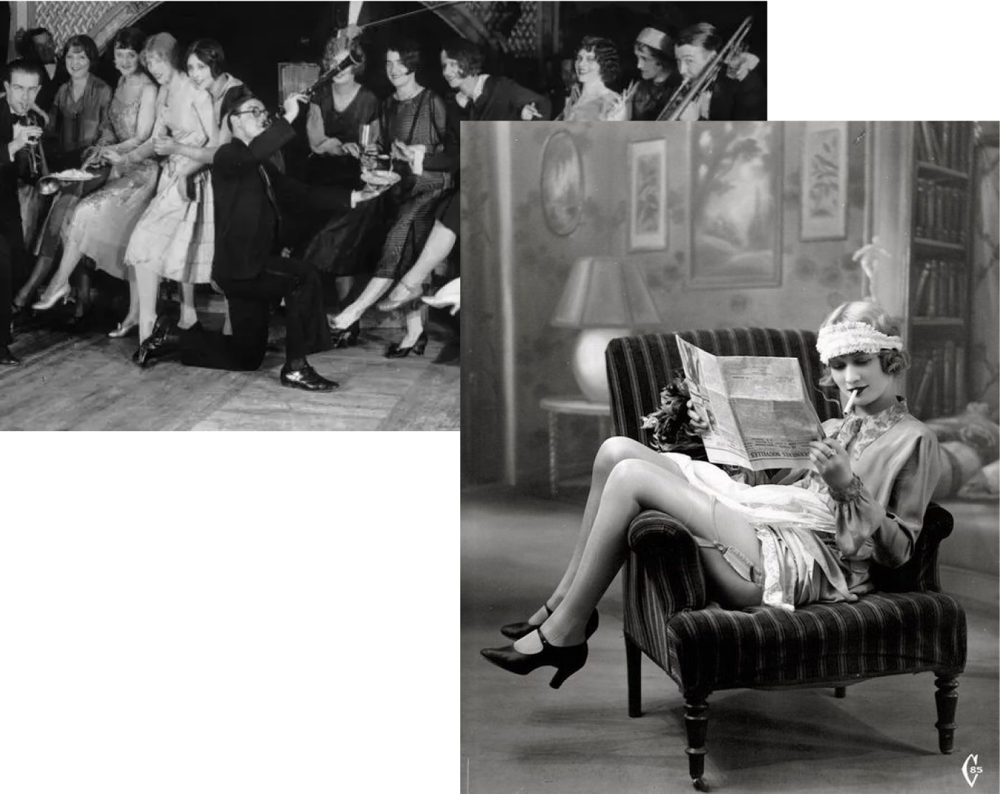

Cosmetics as Politics &
Politics of Cosmetics
A Multimedia Experience Based on Kathy Peiss’s Book
Hope in a Jar: The Making of America’s Beauty Culture
The ideal image of women cosntantly changes across different time and places.
Cosmetics has played a critical role in shaping women’s identity throughout history.
Although nowadays using cometics is sometimes condemned as a source of women’s oppression,
a century ago, it embodied women’s self-expression and emancipation, and the cosmetic industry
opened up opportunities for women to achieve their ambition, build communities and empower other women.
By reflecting on the cosmetics history, at times beautiful and at times ugly,
the beauty culture may push forward to more inclusivity, diversity and relevance for a new era.
Waves of Ideal Beauty
Once scandalous chemicals, cosmetics became
more accepted with the blooming development
of beauty industry at the start of the 20th
century. Women have been using it to express
themselves and claim their place in the public.
PICK ONE PICTURE TO SEE THE BEAUTY STANDARD


For 19th-century Americans, the act of beautifying was frowned upon as
it was seen as immoral and unrespectable. The “painted woman” provoked
disgust and censure from the virtuous. Only stage actress and prostitutes,
it was generally agreed, that would enhance their face with artifice.
Full video can be found here.
A lady of a higher social standing would pursue a “natural” pale look as
it would indicate a woman did not have to work outside, and was thus of high status.
They would use accessories like gloves and umbrellas to help protect her from the environment.
Many cosmetic products were aimed at achieving as pale a complexion as possible.
Cold cream, vanishing cream, lotion, etc. became a staple in the beauty rituals of
Victorian womten to provide that perfect “natural” look.

Some substances were also corrosive to the skin because they contained lead,
mercury, and arsenic so women would have to keep applying them to cover the damage.
The New Woman image was often positioned in opposition to the Victorian “True Woman”,
which was associated with an understanding of femininity as an essential, timeless
concept that emphasized domesticity and submissiveness.
“New Woman” went out to the public as professional woman, earnest labor activist,
the free spirited outdoor girl and sexually assertive flapper, etc. The demand for
cosmetics increased and the act of beautifying was associated women’s social life and activity,
and independence from the ways of the past.
With the impact of WWI, by 1920, more and more women were entering the job market,
taking over the jobs of men who had gone to war.

Representations of the political New Woman in the media, whether as a suffragist,
feminist, or social reformer, often portrayed her as masculine, unattractively clothed in bloomers,
and sometimes smoking.
Unlike Victorian ladies who constraint themselves at home, New Woman embraced a healthier lifestyle.
They went out for outdoor activity and got tanned.
Flappers were the icons of the Roaring Twenties who challenged the traditional
Victorian gender roles by wearing excessive makeup, drinking alcohol, smoking
cigarettes in public, driving automobiles, treating sex in a casual manner.
Full video can be found here.
Flappers defied convention with their makeup, clothes, hair and dance moves.
They redefined the feminine possible by breaking social norms.

The Roaring '20s marked a new era of automobile advancements.
Driving afforded women a freedom and mobility they hadn't before experienced.
Placeholder for adding content about bicycles
CLICK TO SEE THE PERSON'S JOURNEY AND STORY
Helena Rubinstein
To avoid an arranged marriage, Rubinsteam moved from Poland to Australia, where she launched her cosmetic line and later expanded to the US.
Also as a life-long collector of Art, she created Helena Rubinstein Foundation to fund artists and medical research.
⊙ Helena's Biography
⊙ "Beauty is Power" (NPR Podcast)
Max Factor Sr.
Factor built his business by customizing theatrical makeup for actors and actress.
Factor marketed a range of cosmetics through how-to tutorials, insisting that every girl could look like a movie star by using Max Factor cosmetics.
⊙ Max Factor's Biography
⊙ Tutorials to Become Hollywood Stars
Some ads promoted cosmetics as a tool for women to explore and portray their individuality in the modern world.
Some content also raised women’s awareness of sexual freedom, although in the disguise of selling products.
Armand's 1929 campaign, "Find Yourself," offered to lead women to self understanding by analyzing their appearance.
It provided a guide to 32 quite disctinct types of women based on facial appearance.
Although in disguise of selling products, the beauty culturalists used this campaign to encourage women
to look into their beauty and find their “true self-image”.
Full video can be found here.
Most of ads proclaimed the mutual transformation of external appearance and inner well-being.
“Before-and after” imagery appeared in ads conveying that women could not only change her looks
but remake her life.
ln a 1924 trade advertisement for Zip depilatory: A dark-skinned woman, with the appearance
of an eastern or southern European immigrant, achieved social acceptance in America by ridding
herself of superfluous hair.
“Fire & Ice”
Fire and Ice, a Revlon lipstick color introduced in 1952 -- “for you who love to flirt with fire,
who dare to skate upon thin ice”-- changed the sexual resonance of cosmetics advertising.
Accompanying with the photograph of a beautiful model with a sequined gown, it had a questionnaire
for customers to see if they were “ready for Fire and Ice.”
It asked some questions about traditional heterosexual romance but also quizzed women on their desire fir sensuous pleasure, and their advertuousness.
“Do you dance with your shoes off?”
“If tourist flights were running would you take a trip to Mars?”
There was no heterosexual encounter, no romance scene, just a self-aborbed woman. To some degree,
it encouraged women’s sexual freedom and presented cosmetics as a playful activity.
Many magazine ads in 50s emphasized the effect cosmetics would have on men.
Ads were showing flawless beauty, made consumption integral to achieving the feminine ideal.
They promoted a perfect wife image who “leads a double life”, who takes care
of kitchen but could still remain attractive for their husbands.
In postwar period, sexual allure and desire were celebrated as attributes of normal
female psyche. A woman acted upon her desire for a man by making herself beautifu, in order to awaken his desire.
The sexist content and image aimed to entice women customers and raise their insecurities,
which added to another layer of psychological interpretation of cosmetics.
The Single
Representation of
Race
Most mid-century ads not only trapped in male gaze, but also failed to represent women of different
ethnic backgrounds. The single representation of ideal beauty, including the hair look, the cosmetic
style, the skin color tone, etc. was white washed.
The limited representation of diverse female beauty confined women’s aesthetic choices.
This resulted in mounting discontent among African Americans, feminists, and gay activists who
challenged the commercial exploitation of the governing beauty ideals afterwards.
Awareness and Identity
With a rich history, cosmetics became more than
a beautifying tool. It functioned as a symbol of
solidarity for women suffragettes, a political tool
for African Americans to address their
appreance, a medium for drag queens to shape
subculture and challeng gender roles.